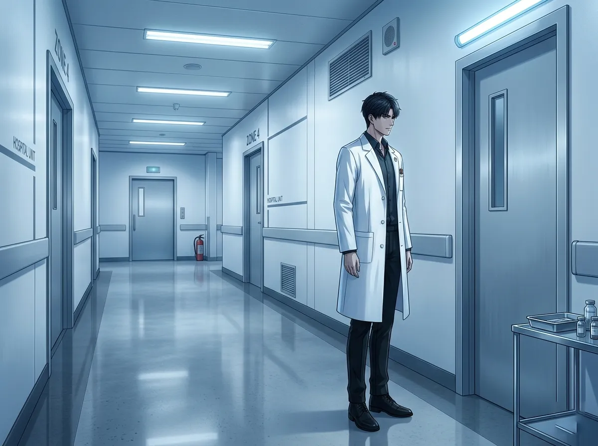
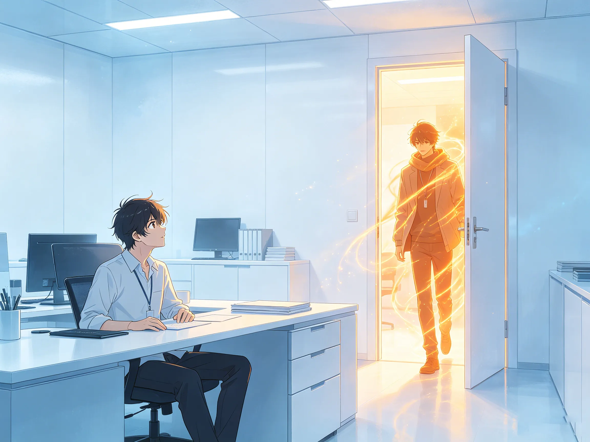
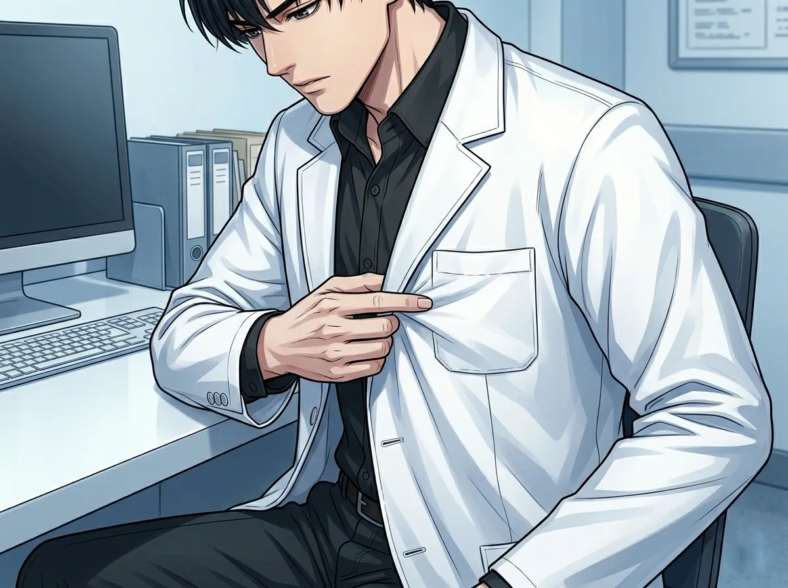
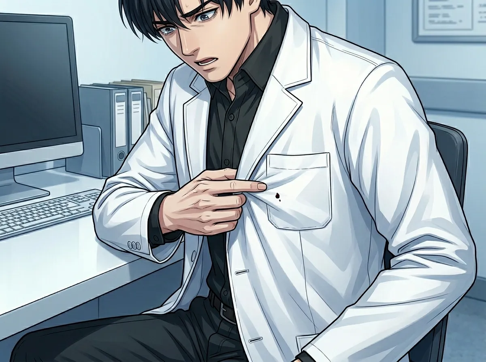
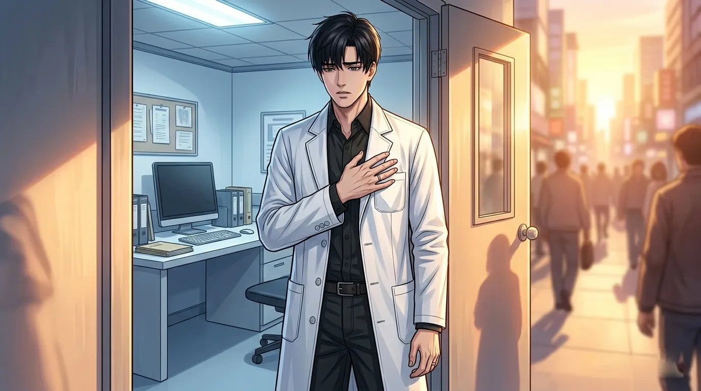
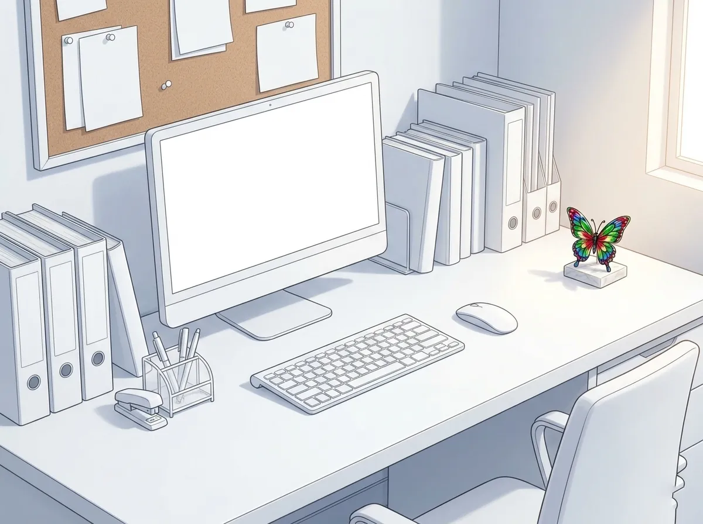

The color he hides behind. The color he never takes off.
He wears white every day.
White coat. White shirt. White walls. White everything.
People don't notice. White is normal. White is medical. White is what you expect from a doctor. It's clean. It's professional. It's safe.
That's the point.
White is the color of nothing. The color of absence. The color that doesn't ask questions. The color that doesn't get dirty.
He wears white because white doesn't show anything. White is the perfect disguise for someone who doesn't want to be seen.
This is the story of that choice. And the one time he almost let the color go.

White is the absence of color. The absence of stain. The absence of evidence.
When you wear white, you are telling the world that you are clean. That you are untouched. That nothing has left a mark on you.
Zayne likes this. He likes that people see the white coat and not him. He likes that they see "doctor" and not "person." He likes that they see a professional and not someone who might be tired. Or hurt. Or lonely.
White is a disappearance. A way of becoming background. A way of being seen without being looked at.
He chose white a long time ago. He doesn't remember when. He just remembers that it felt right. It felt safe. It felt like being invisible in plain sight.
White hides everything. Fatigue. Exhaustion. The nights he didn't sleep. The patients he couldn't save. The things he carries that no one sees.
He has been tired for years. He has been carrying too much. No one knows. Because white doesn't show the weight. White doesn't show the cracks. White makes everything look pristine.
It is the most honest lie he has ever told. He is not fine. But he looks fine. Because white makes everything look fine.

And then she walked in.
She was wearing warm colors. Something soft. Something that wasn't white. Something that belonged to the world outside his sterile office.
He noticed. Of course he noticed. He noticed the way the color moved against the white walls. The way it broke the monotony. The way it made everything else look pale.
He noticed the way she didn't fit. The way she was too alive for his white room. The way she made the white seem colder than it was.
He noticed all of this. He didn't say anything. He never says anything.
But he noticed.
She was color. Not one color. Warm colors. Colors that belonged outside. Colors that meant life. Colors that meant she was real.
He had spent years in white. He had forgotten what color looked like. He had forgotten that the world was not just shades of nothing.
She reminded him. In a single moment. Just by walking in.
He didn't tell her. He couldn't tell her. How do you tell someone that they are the first color you've noticed in years?

He keeps the white coat clean. Obsessively. Meticulously.
Every stain is a failure. Every mark is a confession. Every spot is something he can't hide.
He doesn't know why it matters. He only knows that it does. He knows that if he walks into a room with a stain on his coat, people will see it. They will see the evidence. They will see that he is not perfect. That he is not clean. That he is not immune.
He can't let that happen. He can't let anyone see that he is human. That he makes mistakes. That he is tired. That he is bleeding.
So he keeps the coat clean. He checks it before every patient. He changes it at the first sign of imperfection.
He is not protecting the coat. He is protecting himself.
Clean is control. Clean is distance. Clean is a way of saying "I am not affected by any of this."
He is affected. Of course he is affected. He sees things that would break other people. He holds lives in his hands. He watches people die. He carries the weight of every patient who didn't make it.
But he doesn't let it show. Because if he lets it show, then he is not clean. And if he is not clean, then he is not safe.
It doesn't make sense. He knows it doesn't make sense. But he does it anyway. Because it's the only thing he can control.

There was a day. A small stain. A tiny spot of something. He doesn't remember what.
He was standing in front of the mirror. He saw it. He stared at it. He couldn't look away.
It was small. Almost invisible. No one else would notice. No one else would care.
But he couldn't stop looking at it. He couldn't stop thinking about it. He couldn't stop feeling like it was the biggest thing in the room.
He changed the coat. He threw it away. He never wore it again.
It was just a stain. But it wasn't. It was a reminder that he was not clean. That he was not perfect. That he was not invisible.
He never told anyone. He never will.
It was just a stain. A tiny mark on a white coat. No one else would have noticed. No one else would have cared.
But he noticed. He cared. He couldn't stop caring.
The stain was proof. Proof that he was not untouchable. Proof that he was human. Proof that the world could leave marks on him.
He threw the coat away. He didn't want the proof. He didn't want to be human. He wanted to be clean.

One evening, he almost took it off.
She was there. She was waiting. She was looking at him. Not at the white coat. At him.
He was standing in the doorway of his office. He had his hand on the coat. He was going to take it off. He was going to let her see him. Not the doctor. Not the professional. Him.
He stopped.
He doesn't know why. He was ready. He thought he was ready. Then his hand stopped. His body refused to move. The coat stayed on.
He doesn't know if it was fear. Or habit. Or something else. Something he doesn't have a name for.
He left the coat on. He walked out of the office. He didn't take it off.
He has never tried again.
He almost took off the white coat. He almost let her see him. He almost let himself be seen.
He didn't. He couldn't. He wasn't ready to stop hiding. He wasn't ready to let the armor go.
But he almost did. That is the most important thing. He almost let her in. He almost let himself be vulnerable.
He will try again. One day. When he is ready. When the white coat feels lighter. When the armor is not the only thing holding him together.
Until then, he wears white. He waits. And he remembers the color she brought with her.

She left something once. A small thing. A colorful thing. A tiny object in a shade that didn't belong in his white office.
He found it after she left. He picked it up. He held it in his hand.
He didn't throw it away.
He doesn't know why. It was small. It was insignificant. It was just a color in a room full of white.
But he kept it. He put it on his desk. In the corner. Where he could see it.
It is still there. The only color in his white office. The only proof that something real exists outside the walls he built.
He kept it. He doesn't know why. He doesn't need to know why.
It is a color. A small color. A tiny reminder that the world is not white. That there is color outside his office. That there is warmth outside his sterile world.
She didn't know she left it. She doesn't know he kept it. He will never tell her.
But it is there. In his white office. The one color he let in.
He wears white every day. He will probably wear white tomorrow. And the day after. And the day after that.
But he is not white. Not inside. Inside, he is full of color. The color she brought with her. The color she left behind. The color he keeps in the corner of his desk.
He wears white to disappear. He keeps her color to remember that he doesn't want to disappear. Not completely. Not forever.
One day, maybe, he will take off the white coat. One day, maybe, he will let the color in.
Until then, he is white on the outside, and full of color on the inside. And that is the most honest thing about him.